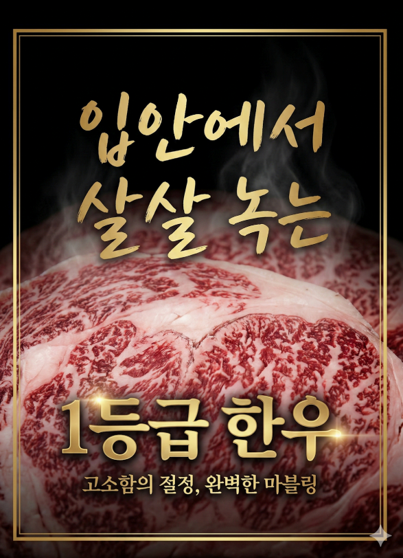
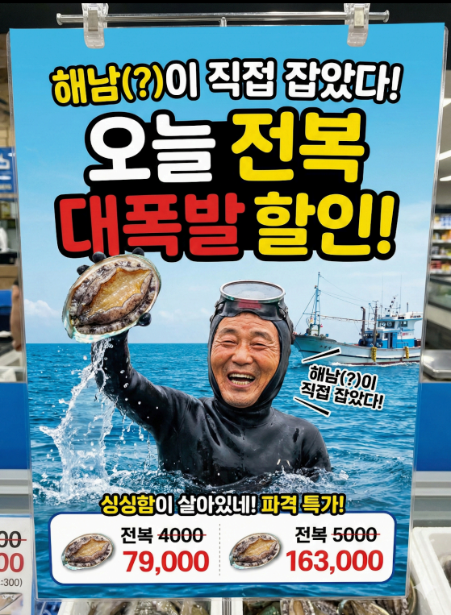

POP 생성하기
텍스트를 입력하여 이미지를 생성해보세요
AI 이미지 보기
-
02-11 16:00
정육코너에서 사용할 소고기에 대한 POP를 만들어줘. 핵심 키워드는 고소함,마블링이야. 메인카피는 "입안에서 살살 녹는 1등급 한우" 클로즈업된 소고기 마블링과 고급스러운 금색 폰트로 꾸며줘
이미지 생성중
-
02-11 15:00
정육코너에서 사용할 소고기에 대한 POP를 만들어줘. 핵심 키워드는 고소함,마블링이야. 메인카피는 "입안에서 살살 녹는 1등급 한우" 클로즈업된 소고기 마블링과 고급스러운 금색 폰트로 꾸며줘
-
02-11 14:00
정육코너에서 사용할 소고기에 대한 POP를 만들어줘. 핵심 키워드는 고소함,마블링이야. 메인카피는 "입안에서 살살 녹는 1등급 한우" 클로즈업된 소고기 마블링과 고급스러운 금색 폰트로 꾸며줘

이미지 크게보기

이미지를 생성을 시작합니다
잠시만 기다려주세요.